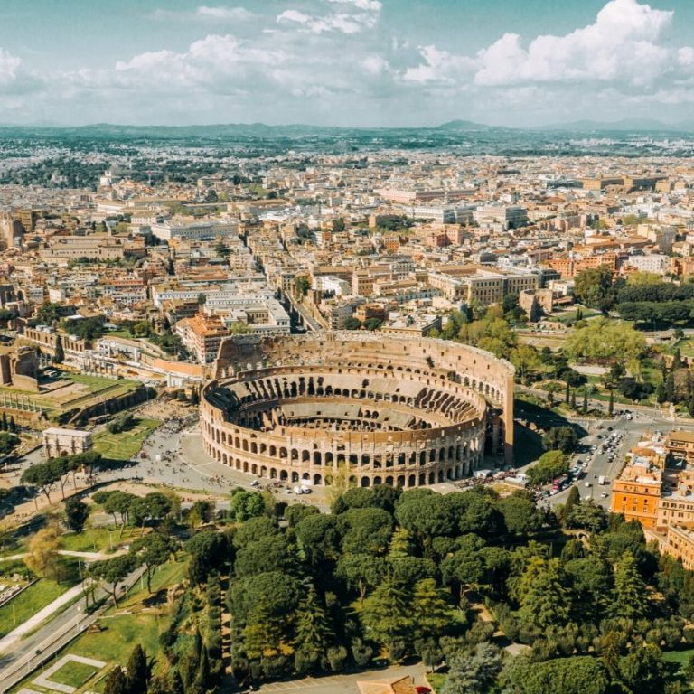

The Colosseum, also known as the Flavian Amphitheatre, is an oval amphitheater in the center of the city of Rome, Italy. It was built of concrete and stone and is considered one of the greatest works of Roman architecture and engineering.
It was used for gladiatorial contests and public spectacles such as animal hunts, mock sea battles, and re-enactments of famous battles, and was capable of seating 50,000 to 80,000 spectators.
The Colosseum is the largest amphitheater ever built and is one of Rome's most popular tourist attractions, attracting millions of visitors each year. It is also one of the New Seven Wonders of the World.
Do you want to learn more about the Colosseum?